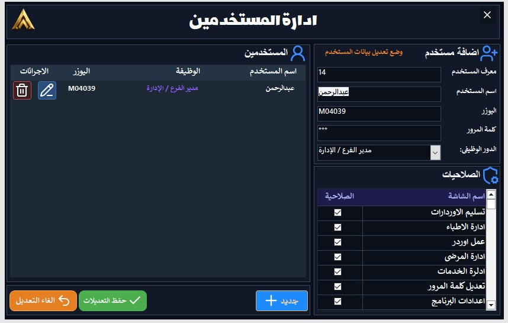

APEXORA LAB
نظام إدارة معامل الأسنان والتركيبات
نظام إدارة معامل الأسنان والتركيبات
نظام متكامل لإدارة أوردرات التركيبات، حسابات الأطباء والمرضى، تتبع مراحل التسليم، والمرفقات المرئية للحالات بدقة واحترافية تامة.
تعرف على الإمكانيات الجبارة والشاشات المصممة خصيصاً لتسهيل إدارة العمل اليومي لمعمل الأسنان.

نظرة عامة وشاملة على الإيرادات، الأوردرات قيد التنفيذ، وحالة التسليم الشهرية.

متابعة الأطباء المتعاملين مع المعمل، حساباتهم، وتحديد الأكثر تعاملاً.

أرشيف كامل بأسماء المرضى، أرقام الهواتف، وتاريخ العمليات والتركيبات.

تحديد أسعار التركيبات، المدة التقديرية، والفئات المختلفة بكل سهولة.

ربط الأوردر بالطبيب والمريض وإضافة الخدمات والمرفقات المرئية (4 خطوات متكاملة).

شاشة مخصصة لإدارة التسليمات اليومية، تسوية الحسابات المتبقية، وتأكيد الدفع كاش.

التحكم في صلاحيات الوصول للموظفين والعاملين داخل المعمل بكل أمان.

حماية متقدمة للحسابات مع متطلبات أمان قوية وتغيير دوري لكلمات المرور.

حماية بياناتك بقواعد بيانات مؤمنة مع خيارات النسخ الاحتياطي، الاستعادة، وتهيئة المصنع.
واجهات مبنية بعناية فائقة لتسهيل إدخال البيانات دون أي تعقيد أو بطء.
أنظمة نسخ احتياطي متقدمة وصلاحيات مستخدمين تضمن سرية تامة لبيانات المعمل.
متابعة لحظية للأرباح، الأوردرات الأكثر طلباً، وحسابات الأطباء والمرضى بدقة.